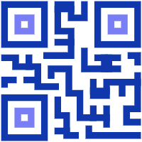
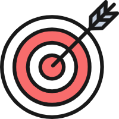
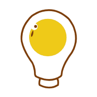
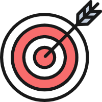
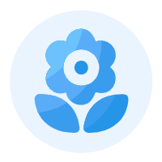

林荣烽
网络与新媒体专业学生 / 广州
基本信息
- 林荣烽 / 男 / 20岁
- CET-4
- 二级甲等
联系方式
技能点
 二维码
教育经历
-
广东省江门市平山小学（小学）
广东省江门市新会区会城镇平山小学
专业排名 X/XX，在小学期间，认真学习，多次获得“三好学生”称号，课外积极参与体育锻炼。
-
广东省江门市创新初级中学（初中）
广东省江门市新会区会城镇创新初级中学
专业排名 X/XX，在初中期间，兼顾学习的同时积极参与活动，曾参加校园文化艺术节获奖；在初二入选共青团，正式成为共青团员。
-
广东省江门市新会东方红中学（高中）
广东省江门市新会区会城镇新会东方红中学
专业排名 X/XX，在高中期间，专心学习，利用空余时间提高自身素养，被评为“三好学生”以及“品学兼优学生”，荣获优秀共青团员。
-
广东省广州市广州南方学院（大学本科）
广东省广州市从化区区温泉镇广州南方学院
专业排名 X/XX，就读于广州南方学院，学习网络与新媒体专业，合理安排自身规划，学习和考证都按计划进行。
在校经历
-
[经历一]大一 学习英语专业
- 1.刚进入大学，学习的是英语专业，在学习英语的过程中，参加了外国语学院举办的英语配音比赛。
- 2.在学习英语专业的时候，跟随班级参加班级合唱比赛，获得三等奖。
- 3.在学习英语的过程中，发现自己对网络与新媒体专业更感兴趣，于是在大一下学期提出转专业的申请，大二正式开始学习网络与新媒体专业内容。
-
[经历二]大二 学习网络与新媒体专业
- 1.大二时期，开始学习网络与新媒体专业，学习专业相关的课程，例如 Python、Ps、Pr、HTML网页、大数据、UI设计等方面的课程知识。
- 2.大二时期，除了学习相关课程，同时也进行了英语四级考试并且通过了英语四级，进行普通话考试获得二级甲等；
- 3.在选择专业方向上，选择了产品设计与运营方向。在此基础上学习有关产品设计与运营的相关课程，并且完成制作APP界面、制作小程序等多个项目。
个人项目
-
[项目1]趣味多面包坊 Demo
-

[学习]通过学习创业基础课程内容，对创业有一定的基础了解。
[成员]个人完成
 [效果]通过 “探索-调研-创建”等过程，写出了一份详细的创业计划书，针对创业可实现的可能性进行描述。
-

[学习]通过学习创业基础课程内容，对创业有一定的基础了解。
-
[项目2]旅游景点信息可视化 Demo
- 技术栈：Tableau
-
[学习]通过学习信息可视化课程，对处理数据具有一定的了解，掌握使用Tableau软件。
[成员]个人完成
[效果]通过 “收集-分析-制作图表”等过程，完成了利用可视化分析旅游景点的项目，同时进一步掌握Tableau的使用。
-
[项目3]星打APP界面设计 Demo
- 技术栈：墨刀
-
[学习]通过学习用户界面设计课程内容，对APP界面布局、配色、icon视觉系统、图片规范、用户体验等方面具有一定程度了解。
[成员]个人完成
[效果]通过利用墨刀软件，制作了一款以追星为主题的APP，其核心价值集中体现在用户对追星的热爱上，让使用该款 APP 的用户能以轻松的心态随时了解自己喜欢的明星的动态以及其各自的行程和活动。
-
[项目4]媒体查询+HTML个人简历 Demo
- 技术栈：HTML 5+CSS+JS
-
[学习]通过学习网页设计与制作课程，了解响应式网页、HTML5基础知识、CSS基础知识、弹性布局等方面的知识并掌握相关内容。
[成员]个人完成
[效果]了解响应式网页等多方面的知识，认识到如何制作HTML网页以及如何使用媒体查询，利用HTML的相关知识对个人简历模板进行修改。
 自我评价/期望
本人性格开朗，自信、乐观、有较强的责任心和团队意识。有良好的学习以及协调能力，还有良好的团队精神。我相信我自己有足够的信心以及能力去适应新的工作和承受竞争所带来的压力。本人乐于接受新的挑战，希望在以后的工作中和公司共同发展。